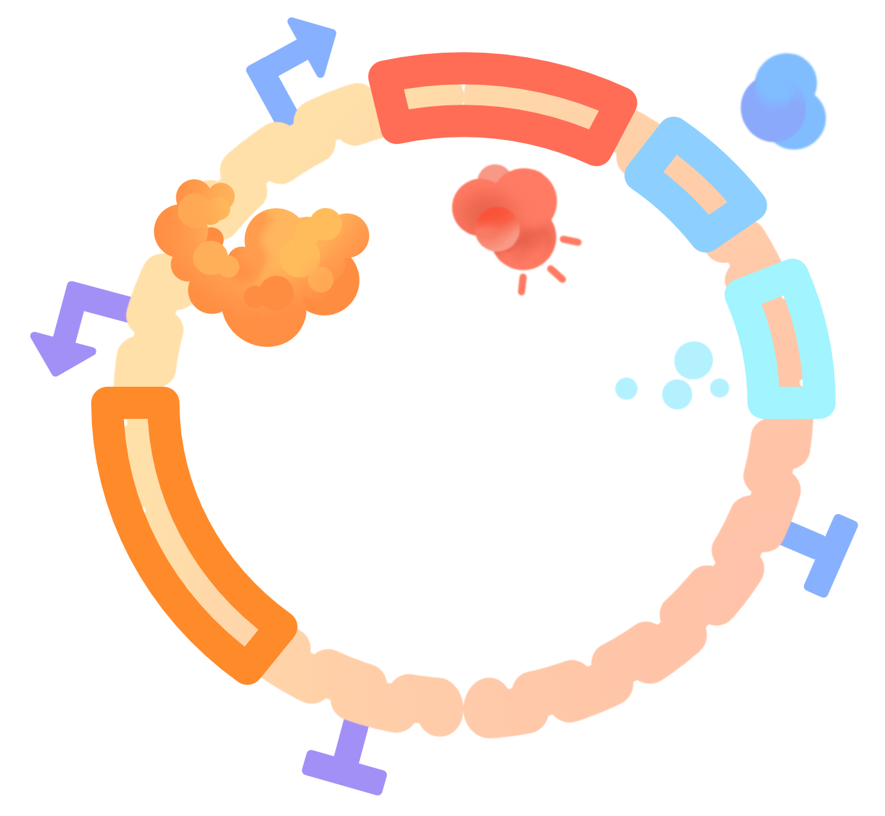
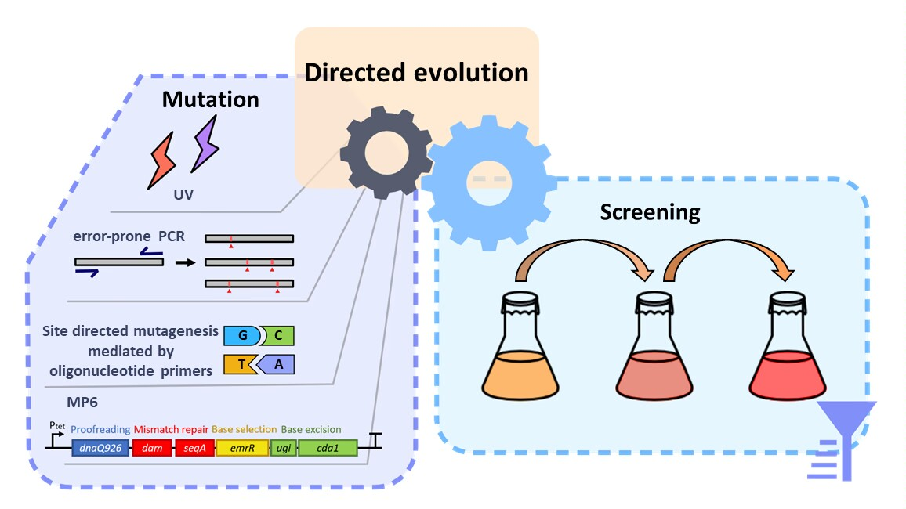

Directed evolution is a powerful tool for protein evolution to obtain new functional biomolecules[1], and contains two aspects, mutation and selection. Many efficient methods have been developed to facilitate fast and efficient mutagenesis of proteins[2], while a suitable and high-throughput selection strategy is urgently needed to screen for desirable and optimal phenotypes.
A dual selection system was developed to identify allosteric transcription factor (aTF) PobR mutants responsive to different aromatic compounds. This dual selection system was proved to be efficient, and can be potentially applied to adjusting the specificity of other aTFs to generate fine-tuned tools in synthetic biology.
